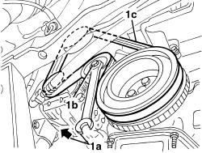

1092B40 AIR CONDITIONER COMPRESSOR/ALTERNATOR DRIVE BELT - R + R
- Path
- Procedures > 10 ENGINE > 1092 ENGINE COMPONENT MISCELLANEOUS DRIVES > 1092B WATER PUMP AND ALTERNATOR DRIVE > 1092B40 AIR CONDITIONER COMPRESSOR/ALTERNATOR DRIVE BELT - R + R
- Kind
- repair procedure (removal / refitting; the operation number is the code)
- Applies to
- engines: 1.4 8v; all production periods
- Interactive page
- https://sloeber94.github.io/elrnDB-fDbl/en/#/223000136
Applies to: engines: 1.4 8v; all production periods
 Removing
Removing
 Refitting
RefittingPosition the vehicle on a lift.
Op. 4450B04 RIGHT FRONT WHEEL - R.R.
Op. 7055B91 RIGHT FRONT WHEEL ARCH LINER - R.R.
Op. 7055B54 PROTECTION/GUARD UNDER ENGINE - R.R.
Op. 1092C11 POWER STEERING PUMP DRIVE BELT - R.R. FOR VERSIONS WITH AIR CONDITIONER
1. Insert a spanner (1a) in the services belt tensioner socket (1b) and rotate it in the direction of the arrow, then release and remove the services belt (1c).

Applies to: engines: 1.4 8v; all production periods
Refitting
RemovingCheck that the belt is not damaged.
Raise the vehicle and refit the services belt moving the tensioner using the spanner in the socket.
Op. 1092C11 POWER STEERING PUMP DRIVE BELT - R.R. FOR VERSIONS WITH AIR CONDITIONER
Op. 7055B54 PROTECTION/GUARD UNDER ENGINE - R.R.
Op. 7055B91 RIGHT FRONT WHEEL ARCH LINER - R.R.
Op. 4450B04 RIGHT FRONT WHEEL - R.R.
Remove the vehicle from the lift.
Topics linked from this page (4)
- 1092C11 power steering pump drive belt - r r for versions with air conditioner
- 4450B04 right front wheel r r
- 7055B54 under-engine guard - r r
- 7055B91 RIGHT FRONT WHEEL ARCH LINER - R.R.